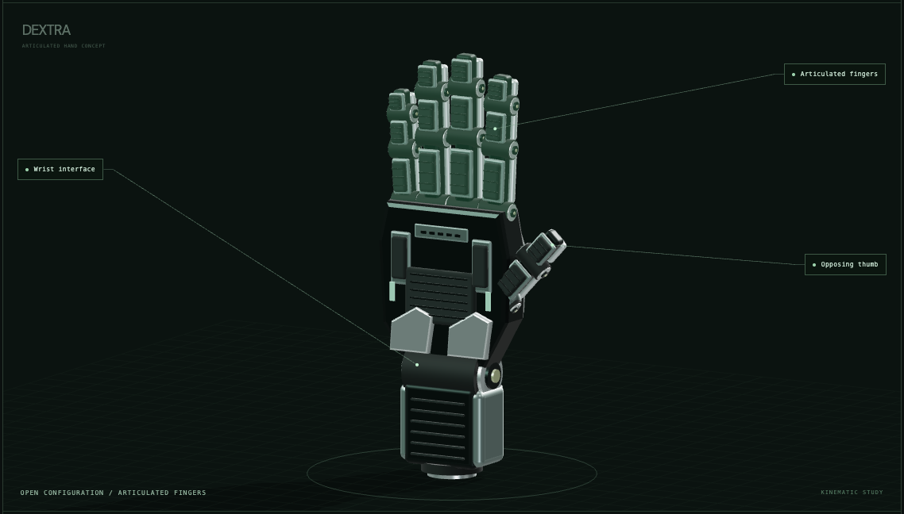
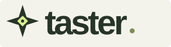
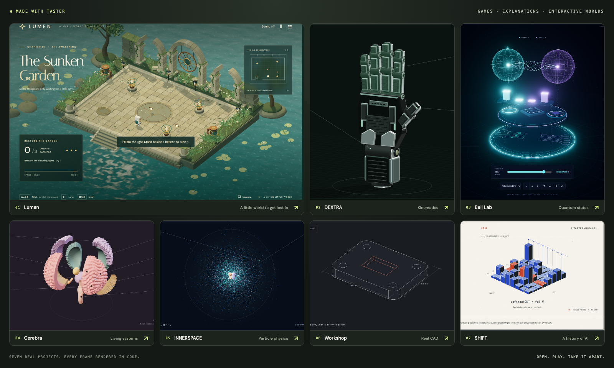
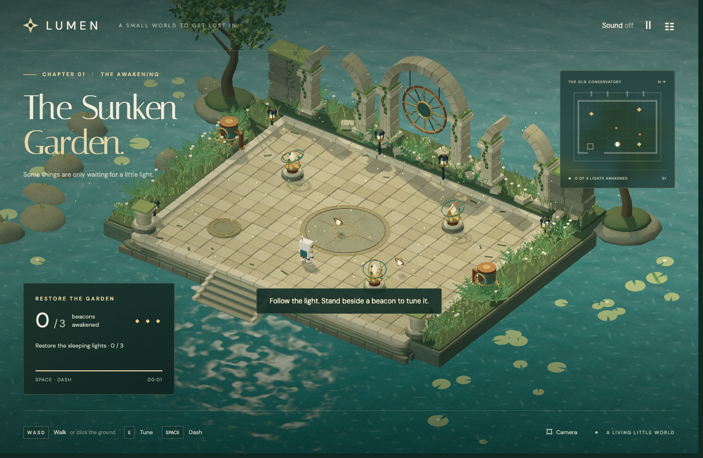
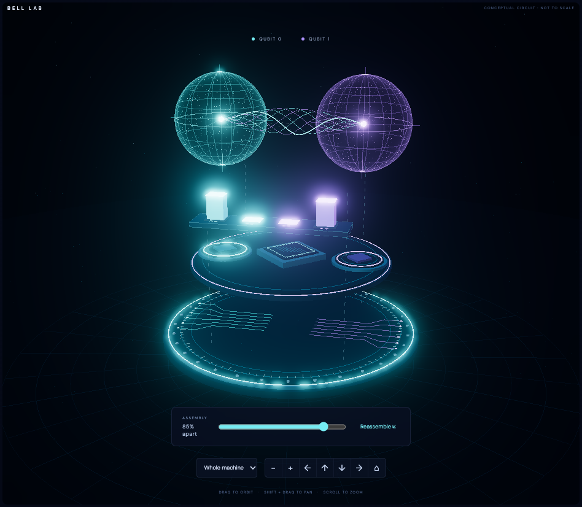
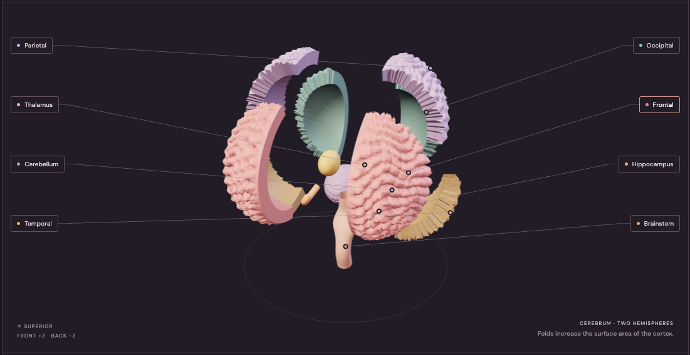
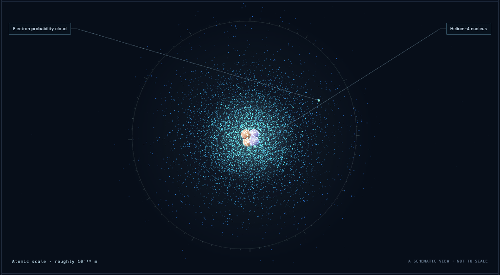
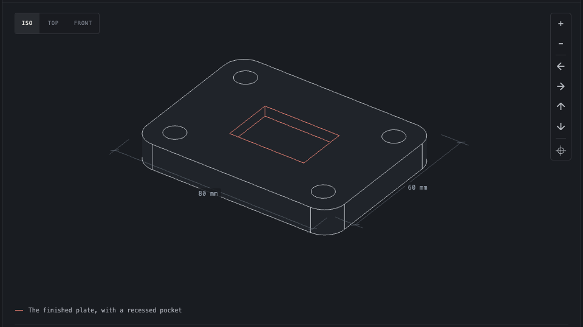
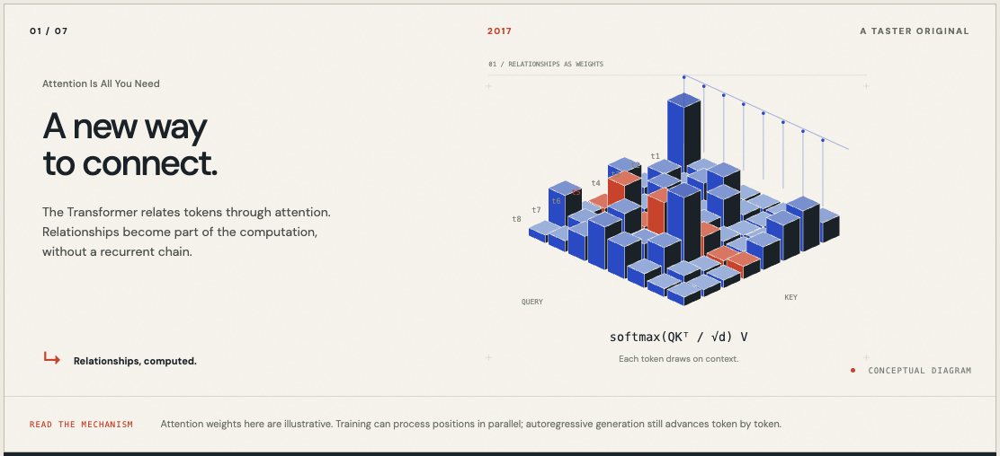

01 / MECHANISM STUDYDEXTRA
ROBOTICSFive fingers. One intention. Close the fist, follow the joints, and lift the armor to see what makes it move.
Inspect the mechanism
A CREATIVE CODING SKILL / AN OPEN INVITATION
Give curiosity something to play with. Turn science, mechanisms, and imagined worlds into interactive experiences with Taster.
Explore the collection
Rendered in code. Made to be understood.
Play · Inspect · Take apart · Make it yours01 / THE COLLECTION
Every example is a complete experience.
Open one. Move something. See what changes.

01 / MECHANISM STUDYFive fingers. One intention. Close the fist, follow the joints, and lift the armor to see what makes it move.
Inspect the mechanism
02 / PLAYABLE WORLDA forgotten garden is waiting. Find its shrines, tune their resonance, and bring the light back.
Enter the garden
03 / QUANTUM EXPERIMENTTwo qubits. Surprising connections. Build a circuit, inspect the apparatus, and solve three quantum puzzles.
Try the experiment
04 / A LIVING SYSTEMMeet the regions of the brain. Look beneath the cortex, follow the labels, and put the pieces back together.
Look a little deeper
05 / A JOURNEY INTO MATTERTravel from atoms to quarks and gluons. Change your scale, inspect the particles, and reach the edge of what we know.
Begin the expedition
06 / FROM CODE TO SOLIDA solid, one operation at a time. Follow the code, inspect the edges, and download the finished STEP or STL.
Follow the construction
07 / A SHORT FILM IN CODEFrom “Attention Is All You Need” to the open question of AGI. Seven chapters, ninety seconds, and a timeline you control.
Watch the story unfoldAll examples are free to explore. No sign-in or API key. A modern browser with WebGL 2 is recommended for the 3D experiences.
02 / THE SKILL BEHIND THE SCENES
Taster gives your coding agent a way to build explanations you can touch: a model, a scene, a story, and the controls to explore it.
Name the subject, the audience, and the thing you want them to discover.
Build a small game, a quiet CAD study, a guided science journey, or an articulated mechanism.
Pan, zoom, play, pause, separate, reassemble. Let people follow their own curiosity.
$taster Create a robotic hand that opens, closes into a fist, and reveals its inner mechanism. Let me pan, zoom, separate the armor, and reassemble it. Make the motion precise and the design quietly futuristic.
BRING TASTER TO YOUR AGENT
Keep the complete repository so the guides, toolkit, and examples travel together.
git clone https://github.com/josoroma/taster.git
mkdir -p "$HOME/.agents/skills"
ln -s "$PWD/taster" "$HOME/.agents/skills/taster"